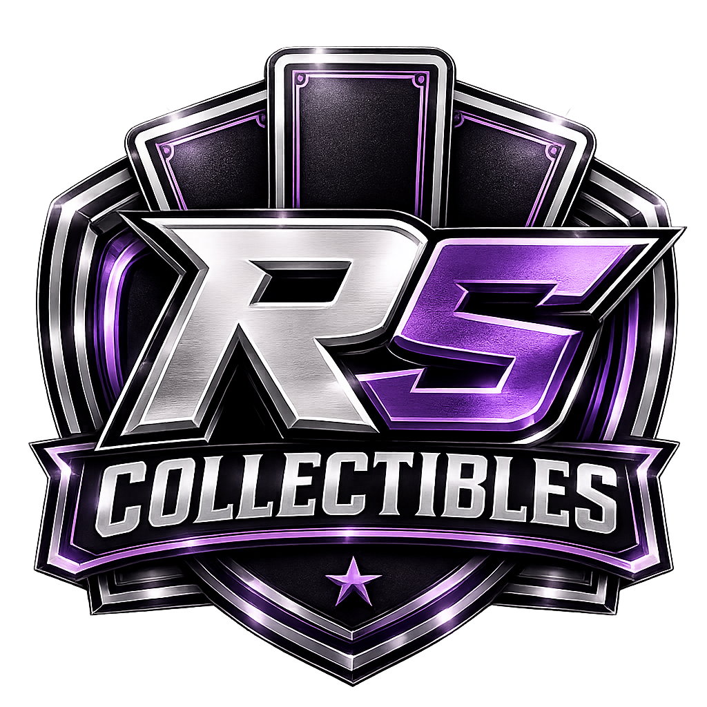

Premium Live Casebreaks für Topps- und Panini-Sammelkarten. Faire Preise, sichere Verpackung und transparente Breaks.
verkaufte Spots
Live Streams
% Transparenz
Bei RSCollectiblesDE dreht sich alles um hochwertige Topps- und Panini-Produkte. Unsere Live-Streams auf Whatnot bieten faire Casebreaks, professionelle Abwicklung und einen sicheren Versand aller gezogenen Karten.
Alle Breaks werden live durchgeführt – ohne Ausnahmen.
Alle Karten werden sorgfältig geschützt und schnell verschickt.
Topps- und Panini-Produkte von seriösen Händlern.
Faire Breaks und entspannte Streams mit Leidenschaft.
Folge RSCollectiblesDE auf Whatnot und verpasse keinen Stream.
Zu Whatnot